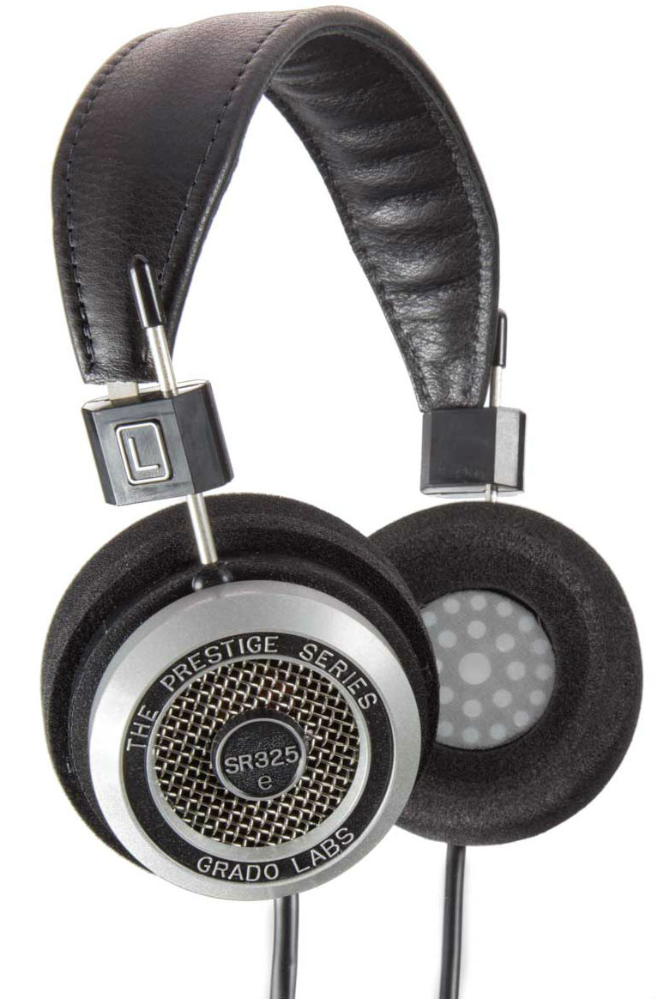

Editor: Student 1

Personal Details
Name:
Sean Cassiere
Email:
Identification
University of Westminster:
W1715755
Informatics Institute of Technology:
2016074
An audiophile is a person who is enthusiastic about high-fidelity sound reproduction. An audiophile seeks to reproduce the sound of a live musical performance, typically in a room with good acoustics. It is widely agreed that reaching this goal is very difficult and that even the best-regarded recording and playback systems rarely, if ever, achieve it.

Audiophile values may be applied at all stages of music reproduction: the initial audio recording, the production process, and the playback, which is usually in a home setting. In general, the values of an audiophile are seen to be antithetical to the growing popularity of more convenient but lower quality music, especially lossy digital file types like MP3, lower definition streaming services, and inexpensive headphones
Name:
Sean Cassiere
Email:
University of Westminster:
W1715755
Informatics Institute of Technology:
2016074